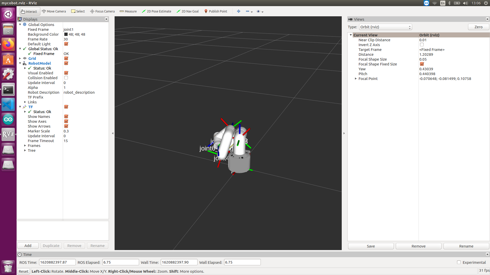
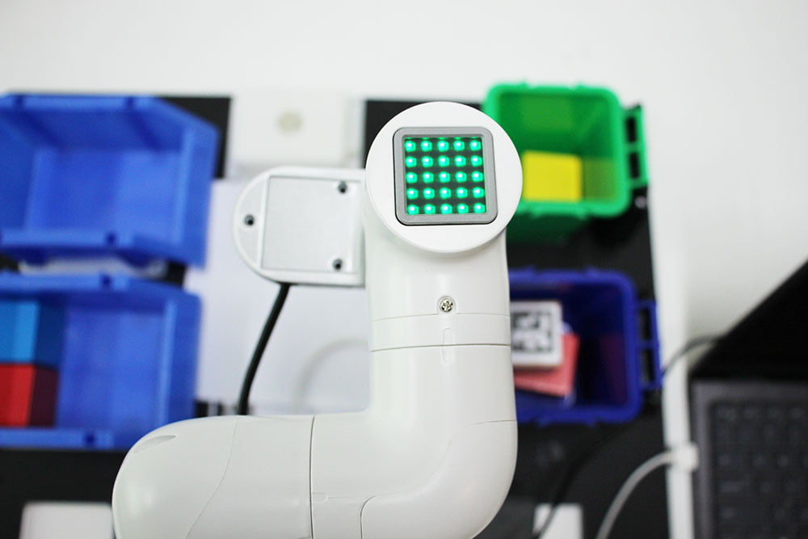
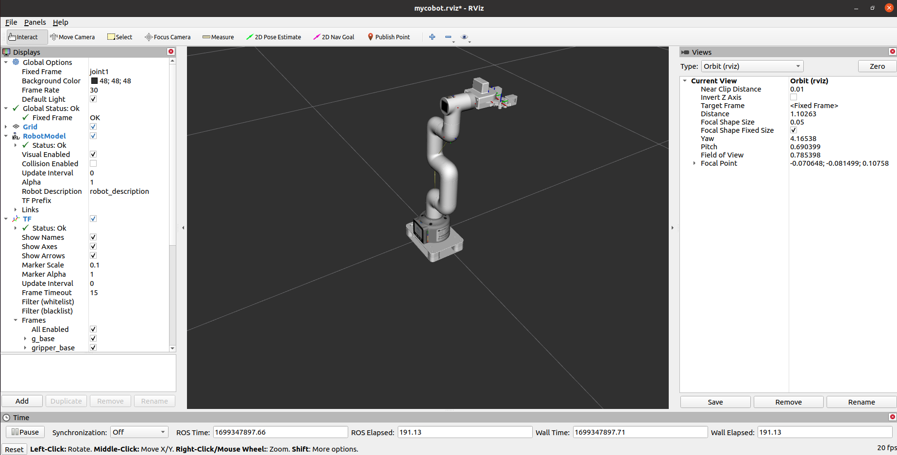
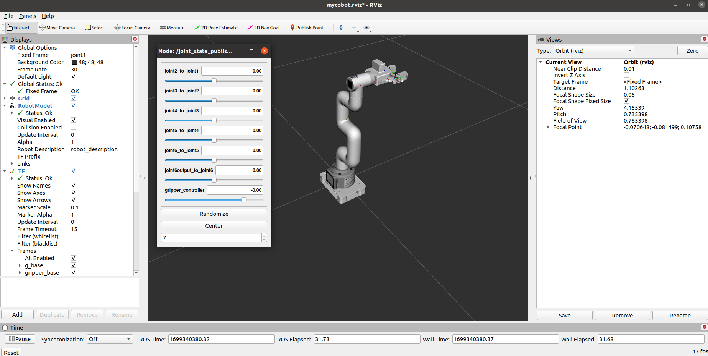
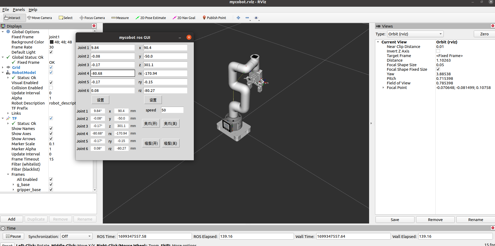
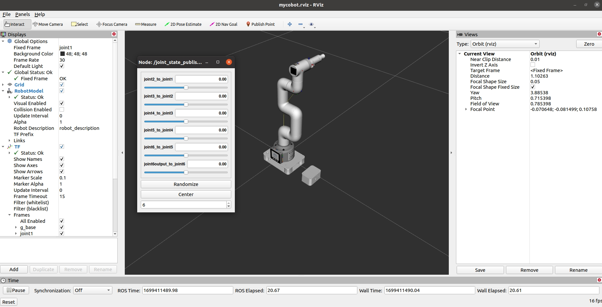
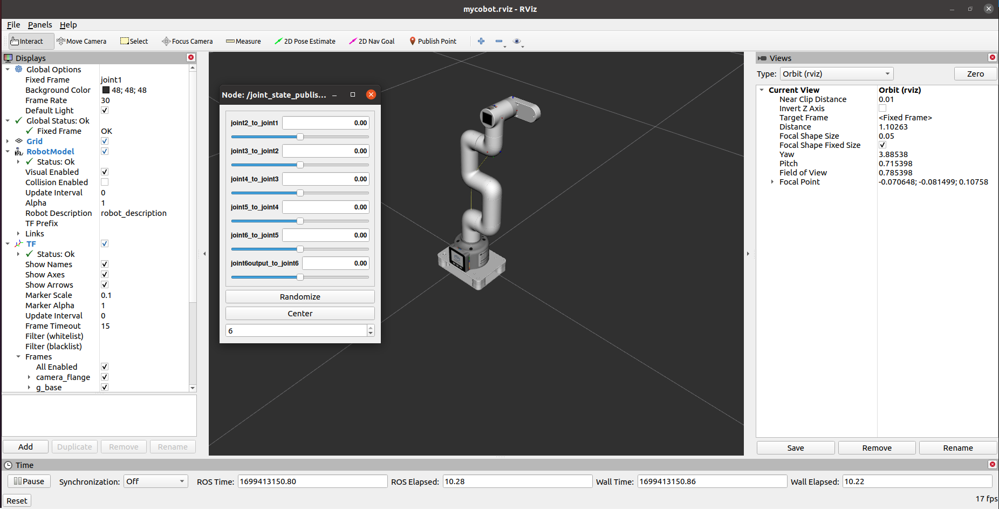

A brief introduction and use of rviz
rviz is a 3D visualization platform in ROS. On the one hand, it can realize the graphical display of external information. On the other hand, it can also release control information to objects through rviz, thereby realizing the monitoring and control of robots.
Introduction to the installation and interface of rviz
When installing ros, if you perform a complete installation, rviz has been installed, and you can try to run it directly; if it is not fully installed, you can install rviz separately:
# Ubuntu16.04
sudo apt-get install ros-kinetic-rviz
# Ubuntu18.04
sudo apt-get install ros-melodic-rviz
# Ubuntu20.04
sudo apt-get install ros-noetic-rviz
After the installation is complete, please open a new terminal (shortcut key Ctrl+Alt+T) and enter the following command:
roscore
Then open a new terminal (shortcut key Ctrl+Alt+T) and enter the command to open rviz
rosrun rviz rviz
# or
rviz
Open rviz and the following interface will be displayed:

Introduction to each area
On the left is the display list. A display is something that draws something in the 3D world and may have some options available in the display list.
On the top is the toolbar, which allows users to select multiple functions with various function keys
In the middle is the 3D view: it is the main screen that allows users to view various data in three dimensions. The background color, fixed frame, grid, etc. of the 3D view can be set in detail in the Global Options and Grid items displayed on the left.
Below is the time display area, including system time and ROS time.
On the right is the observation angle setting area, which can set different observation angles.
In this section, we will only give a rough introduction. If you want to know more details, you can go to the User Guide to check it out.
mycobot_ros installation and update
M5 version: Please see the end of the 13.1.2 Environment Setup section.
PI version (Ubuntu 20.04):
mycobot_ros is a ROS package launched by ElephantRobotics that is compatible with various types of desktop robotic arms.
Project address: https://github.com/elephantrobotics/mycobot_ros
The official default workspace is catkin_ws.
Click the ROS1 Shell icon on the desktop or the corresponding icon in the bar below the desktop to open the ROS1 environment terminal:


Then enter the following command:
cd ~/catkin_ws/src # Enter the src folder in the workspace
# Clone the code on github
git clone https://github.com/elephantrobotics/mycobot_ros.git
cd .. # Return to the workspace
catkin_make # Build the code in the workspace
source devel/setup.bash # Add environment variables
Note: If the mycobot_ros folder already exists in the /home/er/catkin_ws/src (equivalent to ~/catkin_ws/src) directory, you need to delete the original mycobot_ros first, and then execute the above command. Among them, er in the directory path is the user name of the virtual machine. If it is inconsistent, please modify it.
Simple use
Start through the launch file
This example is based on the premise that you have completed Environment Construction and successfully copied the company's code from GitHub.
Open a console terminal (shortcut key Ctrl+Alt+T) Enter the following command to ROS environment configuration.
cd ~/catkin_ws/
source devel/setup.bash
Enter again:
- mycobot 280-M5 version:
roslaunch mycobot_280 test.launch
- mycobot 280-Pi version:
roslaunch mycobot_280pi test.launch
- mycobot 280-JetsonNano version:
roslaunch mycobot_280jn test.launch
Open rviz and get the following result:

If you want to learn more about rviz, you can go to the official document to view it
M5 version prerequisites
- Open the console terminal (shortcut key Ctrl+Alt+T), open the terminal window to view the device name:
# View the device name of the robot
ls /dev/ttyUSB* # Old version myCobot280 M5
# If the terminal does not display the /dev/ttyUSB related name, you need to use the following command
ls /dev/ttyACM* # New version myCobot280 M5
- Grant serial port permissions to the robot:
# The default device name is /dev/ttyUSB0. If the device name is not the default value, it needs to be modified.
sudo chmod 777 /dev/ttyUSB0 # Old version myCobot280 M5
sudo chmod 777 /dev/ttyACM0 # New version myCobot280 M5
Then enter the user password (Note: The password will not be displayed, just enter it correctly).
280 series rviz user guide
Robot arm control
Slider control
Open a command line and run:
- mycobot 280-M5 version:
# The default serial port name of mycobot 280-M5 version is "/dev/ttyUSB0" and the baud rate is 115200. The serial port name of some models is "dev/ttyACM0". If the default serial port name is wrong, you can change the serial port name to "/dev/ttyACM0".
roslaunch mycobot_280 slider_control.launch port:=/dev/ttyUSB0 baud:=115200
- mycobot 280-Pi version:
# The default serial port name of mycobot 280-Pi version is "/dev/ttyAMA0" and the baud rate is 1000000.
roslaunch mycobot_280pi slider_control.launch port:=/dev/ttyAMA0 baud:=1000000
- mycobot 280-JetsonNano version:
# mycobot 280-JetsonNano version default serial port name is "/dev/ttyTHS1", baud rate is 1000000.
roslaunch mycobot_280jn slider_control.launch port:=/dev/ttyTHS1 baud:=1000000
- mycobot 280-Arduino version:
# mycobot 280-Arduino version default serial port name is "/dev/ttyACM0", baud rate is 115200.
roslaunch mycobot_280arduino slider_control.launch port:=/dev/ttyACM0 baud:=115200
It will open rviz and a slider component, you will see the following screen:

Then you can control the movement of the model in rviz by dragging the slider. If you want the real mycobot to move with you, you need to open another command line and run:
- mycobot 280-M5 version:
# The default serial port name of mycobot 280-M5 version is "/dev/ttyUSB0" and the baud rate is 115200. The serial port name of some models is "dev/ttyACM0". If the default serial port name is wrong, you can change the serial port name to "/dev/ttyACM0".
rosrun mycobot_280 slider_control.py _port:=/dev/ttyUSB0 _baud:=115200
- mycobot 280-Pi version:
# The default serial port name of mycobot 280-Pi version is "/dev/ttyAMA0" and the baud rate is 1000000.
rosrun mycobot_280pi slider_control.py _port:=/dev/ttyAMA0 _baud:=1000000
- mycobot 280-JetsonNano version:
# mycobot 280-JetsonNano version default serial port name is "/dev/ttyTHS1", baud rate is 1000000.
rosrun mycobot_280jn slider_control.py _port:=/dev/ttyTHS1 _baud:=1000000
- mycobot 280-Arduino version:
# mycobot 280-Arduino version default serial port name is "/dev/ttyACM0", baud rate is 115200.
rosrun mycobot_280arduino slider_control.py _port:=/dev/ttyACM0 _baud:=115200
Please note: due to the commandThe robot arm will move to the current position of the model while inputting. Before you use the command, please make sure that the model in rviz does not have any penetration Do not drag the slider quickly after connecting the robot arm to prevent damage to the robot arm
Model following
In addition to the above controls, we can also let the model follow the real robot arm movement. Open a command line and run:
mycobot 280-M5 version:
# The default serial port name of mycobot 280-M5 version is "/dev/ttyUSB0" and the baud rate is 115200. The serial port name of some models is "dev/ttyACM0". If the default serial port name is wrong, you can change the serial port name to "/dev/ttyACM0". rosrun mycobot_280 follow_display.py _port:=/dev/ttyUSB0 _baud:=115200mycobot 280-pi version:
# The default serial port name of mycobot 280-Pi version is "/dev/ttyAMA0" and the baud rate is 1000000.
rosrun mycobot_280pi follow_display.py _port:=/dev/ttyAMA0 _baud:=1000000
- mycobot 280-JetsonNano version:
# mycobot 280-JetsonNano version default serial port name is "/dev/ttyTHS1", baud rate is 1000000.
rosrun mycobot_280jn follow_display.py _port:=/dev/ttyTHS1 _baud:=1000000
- mycobot 280-Arduino version:
# mycobot 280-Arduino version default serial port name is "/dev/ttyACM0", baud rate is 115200.
rosrun mycobot_280arduino follow_display.py _port:=/dev/ttyACM0 _baud:=115200
Then open another command line and run:
- mycobot 280-M5 version:
roslaunch mycobot_280 mycobot_follow.launch - mycobot 280-Pi version:
roslaunch mycobot_280pi mycobot_follow.launch - mycobot 280-JetsonNano version:
roslaunch mycobot_280jn mycobot_follow.launch - mycobot 280-Arduino version:
It will open rviz to show the model following effect.roslaunch mycobot_280arduino mycobot_follow.launch
GUI control
Based on the previous, this package also provides a simple Gui control interface. This method is intended for real robotic arms to interact with each other, please connect mycobot.
Open the command line:
- mycobot 280-M5 version:
# The default serial port name of mycobot 280-M5 version is "/dev/ttyUSB0" and the baud rate is 115200. The serial port name of some models is "dev/ttyACM0". If the default serial port name is wrong, you can change the serial port name to "/dev/ttyACM0". roslaunch mycobot_280 simple_gui.launch port:=/dev/ttyUSB0 baud:=115200 - mycobot 280-Pi version:
# The default serial port name of mycobot 280-Pi version is "/dev/ttyAMA0" and the baud rate is 1000000. roslaunch mycobot_280pi simple_gui.launch port:=/dev/ttyAMA0 baud:=1000000 - mycobot 280-JetsonNano version:
# mycobot 280-JetsonNano version default serial port name is "/dev/ttyTHS1", baud rate is 1000000.
roslaunch mycobot_280jn simple_gui.launch port:=/dev/ttyTHS1 baud:=1000000
- mycobot 280-Arduino version:
# mycobot 280-Arduino version default serial port name is "/dev/ttyACM0", baud rate is 115200.
roslaunch mycobot_280arduino simple_gui.launch port:=/dev/ttyACM0 baud:=115200

Keyboard control
Added the keyboard control function in the mycobot_280 package, and synchronized it in real time in rviz. This function depends on pythonApi, so make sure it is connected to the real robot arm.
Open a command line and run:
- mycobot 280-M5 version:
# The default serial port name of mycobot 280-M5 version is "/dev/ttyUSB0" and the baud rate is 115200. The serial port name of some models is "dev/ttyACM0". If the default serial port name is wrong, you can change the serial port name to "/dev/ttyACM0".
roslaunch mycobot_280 teleop_keyboard.launch port:=/dev/ttyUSB0 baud:=115200
- mycobot 280-Pi version:
# The default serial port name of mycobot 280-Pi version is "/dev/ttyAMA0" and the baud rate is 1000000.
roslaunch mycobot_280pi teleop_keyboard.launch port:=/dev/ttyAMA0 baud:=1000000
- mycobot 280-JetsonNano version:
# mycobot 280-JetsonNano version default serial port name is "/dev/ttyTHS1", baud rate is 1000000.
roslaunch mycobot_280jn teleop_keyboard.launch port:=/dev/ttyTHS1 baud:=1000000
- mycobot 280-Arduino version:
# mycobot 280-Arduino version default serial port name is "/dev/ttyACM0", baud rate is 115200.
roslaunch mycobot_280arduino teleop_keyboard.launch port:=/dev/ttyACM0 baud:=115200
The running effect is as follows:

The command line will output mycobot information as follows:
SUMMARY
========
PARAMETERS
* /mycobot_services/baud: 115200
* /mycobot_services/port: /dev/ttyUSB0
* /robot_description: <?xml version="1....
* /rosdistro: kinetic
* /rosversion: 1.12.1.17
NODES
/
mycobot_services (mycobot_280/mycobot_services.py)
real_listener (mycobot_280/listen_real.py)
robot_state_publisher (robot_state_publisher/state_publisher)
rviz (rviz/rviz)
auto-starting new master
process[master]: started with pid [1333]
ROS_MASTER_URI=http://localhost:11311
setting /run_id to f977b3f4-b3a9-11eb-b0c8-d0c63728b379
process[rosout-1]: started with pid [1349]
started core service [/rosout]
process[robot_state_publisher-2]: started with pid [1357]
process[rviz-3]: started with pid [1367]
process[mycobot_services-4]: started with pid [1380]
process[real_listener-5]: started with pid [1395]
[INFO] [1620882819.196217]: start ...
[INFO] [1620882819.205050]: /dev/ttyUSB0,115200
MyCobot Status
--------------------------------
Joint Limit:
joint 1: -170 ~ +170
joint 2: -170 ~ +170
joint 3: -170 ~ +170
joint 4: -170 ~ +170
joint 5: -170 ~ +170
joint 6: -180 ~ +180
Connect Status: True
Servo Infomation: all connected
Servo Temperature: unknown
Atom Version: unknown
[INFO] [1620882819.435778]: ready
Next, open another command line and run:
- mycobot 280-M5 version:
rosrun mycobot_280 teleop_keyboard.py
#or
rosrun mycobot_280 teleop_keyboard.py _speed:=70
- mycobot 280-Pi version:
rosrun mycobot_280 teleop_keyboard.py
#or
rosrun mycobot_280pi teleop_keyboard.py _speed:=70
- mycobot 280-JetsonNano version:
rosrun mycobot_280jn teleop_keyboard.py
#or
rosrun mycobot_280jn teleop_keyboard.py _speed:=70
- mycobot 280-Arduino version:
rosrun mycobot_280arduino teleop_keyboard.py#or
rosrun mycobot_280arduino teleop_keyboard.py _speed:=70
You will see the following output in the command line:
Mycobot Teleop Keyboard Controller
---------------------------
Movimg options(control coordinations [x,y,z,rx,ry,rz]):
w(x+)
a(y-) s(x-) d(y+)
z(z-) x(z+)
u(rx+) i(ry+) o(rz+)
j(rx-) k(ry-) l(rz-)
Gripper control:
g - open
h - close
Other:
1 - Go to init pose
2 - Go to home pose
3 - Resave home pose
q - Quit
currently: speed: 50 change percent 5
In this terminal, you can control the state of the robot and move the robot through the keys in the command line.
Parameters supported by this script:
_speed: robot movement speed.
_change_percent: movement distance percentage.
Vision
Install the camera at the end of mycobot. This vision part uses the eye-in-hand method.

Identify and display
Command line operation:
- mycobot 280-M5 version:
roslaunch mycobot_280 detect_marker.launch mycobot 280-Pi version:
roslaunch mycobot_280pi detect_marker.launchmycobot 280-JetsonNano version:
roslaunch mycobot_280jn detect_marker.launchmycobot 280-Arduino version:
roslaunch mycobot_280arduino detect_marker.launchOptional parameters:
- num: camera id, default is 0.
After starting:

Recognize the QR code and obtain the relative position relationship with the camera. According to the end position of mycobot in rviz, perform coordinate conversion and finally display it in rviz.
You can refer to Slider Control and use slider_control.py to control the robot arm
Visual Tracking and Grasping
This section requires the use of a vertical suction pump.
Run from command line:
- mycobot 280-M5 version:
# The default serial port name of mycobot 280-M5 version is "/dev/ttyUSB0" and the baud rate is 115200. The serial port name of some models is "dev/ttyACM0". If the default serial port name is wrong, you can change the serial port name to "/dev/ttyACM0". roslaunch mycobot_280 detect_marker_with_topic.launch port:=/dev/ttyUSB0 baud:=115200 mycobot 280-Pi version:
# The default serial port name of mycobot 280-Pi version is "/dev/ttyAMA0" and the baud rate is 1000000. roslaunch mycobot_280pi detect_marker_with_topic.launch port:=/dev/ttyAMA0 baud:=1000000mycobot 280-JetsonNano version:
# mycobot 280-JetsonNano version default serial port name is "/dev/ttyTHS1", baud rate is 1000000.
roslaunch mycobot_280jn detect_marker_with_topic.launch port:=/dev/ttyTHS1 baud:=1000000
- mycobot 280-Arduino version:
# mycobot 280-Arduino version default serial port name is "/dev/ttyACM0", baud rate is 115200.
roslaunch mycobot_280arduino detect_marker_with_topic.launch port:=/dev/ttyACM0 baud:=115200
Optional parameters:
- num: Camera id, default is 0.
- port: serial port string
- baud: baud rate
After startup:
The status of mycobot will be displayed in real time.

Then run the scripts for tracking and grabbing. Open a new command line:
mycobot 280-M5 version:
rosrun mycobot_280 follow_and_pump.pymycobot 280-Pi version:
rosrun mycobot_280pi follow_and_pump.pymycobot 280-JetsonNano version:
rosrun mycobot_280jn follow_and_pump.pymycobot 280-Arduino version:
rosrun mycobot_280arduino follow_and_pump.pyAfter starting, mycobot will go to its initial position

After the marker is recognized, follow it for a while, then try to absorb and end the program.

End effector
Supported end effectors: myCobot Adaptive Gripper, myCobot Vertical Suction Pump V2.0, Camera Flange
Applicable devices: myCobot 280 M5, myCobot 280 PI
Note: myCobot Adaptive Gripper only supports myCobot 280 M5 devices
myCobot Adaptive Gripper
1 Load the model
Open a command line and run:
- myCobot 280-M5 version:
roslaunch mycobot_280 test_gripper.launch
It will open rviz, and you will see the following screen:

2 Slider Control
Open a command line and run:
- myCobot 280-M5 version:
# The default serial port name of myCobot 280-M5 version is "/dev/ttyUSB0" and the baud rate is 115200. The serial port name of some models is "dev/ttyACM0". If the default serial port name is wrong, the serial port name can be changed to "/dev/ttyACM0".
roslaunch mycobot_280 slider_control_gripper.launch port:=/dev/ttyUSB0 baud:=115200
It will open rviz and a slider component, and you will see the following screen:

Then you can control the movement of the model in rviz by dragging the slider. If you want the real myCobot to move with you, you need to open another command line and run:
- myCobot 280-M5 version:
# The default serial port name of myCobot 280-M5 version is "/dev/ttyUSB0" and the baud rate is 115200. The serial port name of some models is "dev/ttyACM0". If the default serial port name is wrong, you can change the serial port name to "/dev/ttyACM0".
rosrun mycobot_280 slider_control_gripper.py _port:=/dev/ttyUSB0 _baud:=115200
Please note: Since the robot arm will move to the current position of the model while the command is input, please make sure that the model in rviz does not have a model penetration phenomenon before you use the command. Do not drag the slider quickly after connecting the robot arm to prevent damage to the robot arm.
3 Model following
In addition to the above control, we can also let the model follow the movement of the real robot arm. Open a command line and run:
- mycobot 280-M5 version:
# The default serial port name of mycobot 280-M5 version is "/dev/ttyUSB0" and the baud rate is 115200. The serial port name of some models is "dev/ttyACM0". If the default serial port name is wrong, you can change the serial port name to "/dev/ttyACM0".
rosrun mycobot_280 follow_display_gripper.py _port:=/dev/ttyUSB0 _baud:=115200
Then open another command line and run:
- mycobot 280-M5 version:
roslaunch mycobot_280 mycobot_follow_gripper.launch
It will open rviz to show the model following effect.
4 GUI control
Based on the previous, this package also provides a simple Gui control interface. This method is intended to allow real robotic arms to interact with each other. Please connect myCobot.
Open the command line:
- mycobot 280-M5 version:
# The default serial port name of mycobot 280-M5 version is "/dev/ttyUSB0" and the baud rate is 115200. The serial port name of some models is "dev/ttyACM0". If the default serial port name is wrong, you can change the serial port name to "/dev/ttyACM0".
roslaunch mycobot_280 simple_gui_gripper.launch port:=/dev/ttyUSB0 baud:=115200
It will open rviz and a GUI interface, and you will see the following screen:

5 Keyboard control
Keyboard control function has been added to the mycobot_280 package, and it is synchronized in real time in rviz. This function relies on pythonApi, so make sure it is connected to the real robot arm.
Open a command line and run:
- mycobot 280-M5 version:
# The default serial port name of mycobot 280-M5 version is "/dev/ttyUSB0" and the baud rate is 115200. The serial port name of some models is "dev/ttyACM0". If the default serial port name is wrong, you can change the serial port name to "/dev/ttyACM0".
roslaunch mycobot_280 teleop_keyboard_gripper.launch port:=/dev/ttyUSB0 baud:=115200
The running effect is as follows:
The command line will output mycobot information, as follows:
========
PARAMETERS
* /mycobot_services/baud: 115200
* /mycobot_services/port: /dev/ttyUSB0
* /robot_description: <?xml version="1....
* /rosdistro: kinetic
* /rosversion: 1.12.1.17
NODES
/
mycobot_services (mycobot_280/mycobot_services.py)
real_listener (mycobot_280/listen_real.py)
robot_state_publisher (robot_state_publisher/state_publisher)
rviz (rviz/rviz)
auto-starting new master
process[master]: started with pid [1333]
ROS_MASTER_URI=http://localhost:11311
setting /run_id to f977b3f4-b3a9-11eb-b0c8-d0c63728b379
process[rosout-1]: started with pid [1349]
started core service [/rosout]
process[robot_state_publisher-2]: started with pid [1357]
process[rviz-3]: started with pid [1367]
process[mycobot_services-4]: started with pid [1380]
process[real_listener-5]: started with pid [1395]
[INFO] [1620882819.196217]: start ...
[INFO] [1620882819.205050]: /dev/ttyUSB0,115200
MyCobot Status
--------------------------------
Joint Limit:
joint 1: -170 ~ +170
joint 2: -135 ~ +140
joint 3: -150 ~ +150
joint 4: -145 ~ +135
joint 5: -170 ~ +170
joint 6: -180 ~ +180
Connect Status: True
Servo Infomation: all connected
Servo Temperature: unknown
Atom Version: unknown
[INFO] [1620882819.435778]: ready
Next, open another command line and run:
- mycobot 280-M5 version:
rosrun mycobot_280 teleop_keyboard.py
You will see the following output in the command line:
Mycobot Teleop Keyboard Controller
---------------------------
Movimg options(control coordinations [x,y,z,rx,ry,rz]):
w(x+)
a(y-) s(x-) d(y+)
z(z-) x(z+)
u(rx+) i(ry+) o(rz+)
j(rx-) k(ry-) l(rz-)
Gripper control:
g - open
h - close
Pump control:
b - open
m - close
Other:
1 - Go to init pose
2 - Go to home pose
3 - Resave home pose
q - Quit
currently: speed: 50 change percent 5
In this terminal, you can control the state of the robot and move the robot by pressing keys in the command line.
Parameters supported by this script:
- _speed: robot movement speed.
- _change_percent: percentage of moving distance.
myCobot vertical pump V2.0
1 Load the model
Open a command line and run:
- myCobot 280-M5 version:
roslaunch mycobot_280 test_pump.launch
- myCobot 280-PI version:
roslaunch mycobot_280pi test_pump.launch
It will open rviz and you will see the following screen:

2 Slider control
Note: This function only supports the control of the robot
Open a command line and run:
- myCobot 280-M5 version:
### The default serial port name of myCobot 280-M5 version is "/dev/ttyUSB0" and the baud rate is 115200. The serial port name of some models is "dev/ttyACM0". If the default serial port name is wrong, you can change the serial port name to "/dev/ttyACM0".
roslaunch mycobot_280 slider_control_pump.launch port:=/dev/ttyUSB0 baud:=115200
- myCobot 280-PI version:
### The default serial port name of myCobot 280-Pi version is "/dev/ttyAMA0" and the baud rate is 1000000.
roslaunch mycobot_280pi slider_control_pump.launch port:=/dev/ttyAMA0 baud:=1000000
It will open rviz and a slider component, and you will see the following screen:

Then you can control the movement of the model in rviz by dragging the slider. If you want the real myCobot to move with you, you need to open another command line and run:
- myCobot 280-M5 version:
### The default serial port name of myCobot 280-M5 version is "/dev/ttyUSB0" and the baud rate is 115200. The serial port name of some models is "dev/ttyACM0". If the default serial port name is wrong, you can change the serial port name to "/dev/ttyACM0".
rosrun mycobot_280 slider_control.py _port:=/dev/ttyUSB0 _baud:=115200
- myCobot 280-PI version:
### The default serial port name of myCobot 280-Pi version is "/dev/ttyAMA0" and the baud rate is 1000000.
rosrun mycobot_280pi slider_control.py _port:=/dev/ttyAMA0 _baud:=1000000
Please note: Since the robot will move to the current position of the model when the command is input, please make sure that the model in rviz does not have any penetration before you use the command. Do not drag the slider quickly after connecting the robot to prevent damage to the robot.
3 GUI control
Based on the previous, this package also provides a simple Gui control interface. This method is intended for real robots to interact with each other, please connect myCobot.
Open the command line:
- mycobot 280-M5 version:
# The default serial port name of mycobot 280-M5 version is "/dev/ttyUSB0" and the baud rate is 115200. The serial port name of some models is "dev/ttyACM0". If the default serial port name is wrong, you can change the serial port name to "/dev/ttyACM0".
roslaunch mycobot_280 simple_gui_pump.launch port:=/dev/ttyUSB0 baud:=115200
It will open rviz and a GUI interface, and you will see the following screen:

4 Keyboard control
Added keyboard control function in the mycobot_280 package, and synchronized in real time in rviz. This function depends on python API, so make sure to connect to the real robot arm.
Open a command line and run:
- mycobot 280-M5 version:
# The default serial port name of mycobot 280-M5 version is "/dev/ttyUSB0" and the baud rate is 115200. The serial port name of some models is "dev/ttyACM0". If the default serial port name is wrong, you can change the serial port name to "/dev/ttyACM0".
roslaunch mycobot_280 teleop_keyboard_pump.launch port:=/dev/ttyUSB0 baud:=115200
The running effect is as follows:
Next, open another command line and run:
- mycobot 280-M5 version:
rosrun mycobot_280 teleop_keyboard.py
You will see the following output in the command line:
Mycobot Teleop Keyboard Controller
---------------------------
Movimg options(control coordinations [x,y,z,rx,ry,rz]):
w(x+)
a(y-) s(x-) d(y+)
z(z-) x(z+)
u(rx+) i(ry+) o(rz+)
j(rx-) k(ry-) l(rz-)
Gripper control:
g - open
h - close
Pump control:
b - open
m - close
Other:
1 - Go to init pose
2 - Go to home pose
3 - Resave home pose
q - Quit
currently: speed: 50 change percent 5
In this terminal, you can control the state of the robot and move the robot through the keys in the command line.
Parameters supported by this script:
_speed: robot movement speed.
_change_percent: movement distance percentage.
Camera Flange
1 Load the model
Open a command line and run:
- myCobot 280-M5 version:
roslaunch mycobot_280 test_camera_flange.launch
- myCobot 280-PI version:
roslaunch mycobot_280pi test_camera_flange.launch
It will open rviz and you will see the following screen:

2 Slider Control
Note: This function only supports the control of the robot
Open a command line and run:
- myCobot 280-M5 version:
# The default serial port name of myCobot 280-M5 version is "/dev/ttyUSB0" and the baud rate is 115200. The serial port name of some models is "dev/ttyACM0". If the default serial port name is wrong, you can change the serial port name to "/dev/ttyACM0".
roslaunch mycobot_280 slider_control_camera_flange.launch port:=/dev/ttyUSB0 baud:=115200
- myCobot 280-PI version:
# The default serial port name of myCobot 280-Pi version is "/dev/ttyAMA0" and the baud rate is 1000000.
roslaunch mycobot_280pi slider_control_camera_flange.launch port:=/dev/ttyAMA0 baud:=1000000
It will open rviz and a slider component, and you will see the following screen:

Then you can control the movement of the model in rviz by dragging the slider. If you want the real myCobot to move with you, you need to open another command line and run:
- myCobot 280-M5 version:
# The default serial port name of myCobot 280-M5 version is "/dev/ttyUSB0" and the baud rate is 115200. The serial port name of some models is "dev/ttyACM0". If the default serial port name is wrong, you can change the serial port name to "/dev/ttyACM0".
rosrun mycobot_280 slider_control.py _port:=/dev/ttyUSB0 _baud:=115200
- myCobot 280-PI version:
# The default serial port name of myCobot 280-Pi version is "/dev/ttyAMA0" and the baud rate is 1000000.
rosrun mycobot_280pi slider_control.py _port:=/dev/ttyAMA0 _baud:=1000000
Please note: Since the robot will move to the current position of the model when the command is input, please make sure that the model in rviz does not have any penetration before you use the command. Do not drag the slider quickly after connecting the robot to prevent damage to the robot.
Camera Flange && Pump
1 Load the model
Open a command line and run:
- myCobot 280-M5 version:
roslaunch mycobot_280 test_camera_flange_pump.launch
- myCobot 280-PI version:
roslaunch mycobot_280pi test_camera_flange_pump.launch
It will open rviz and you will see the following: